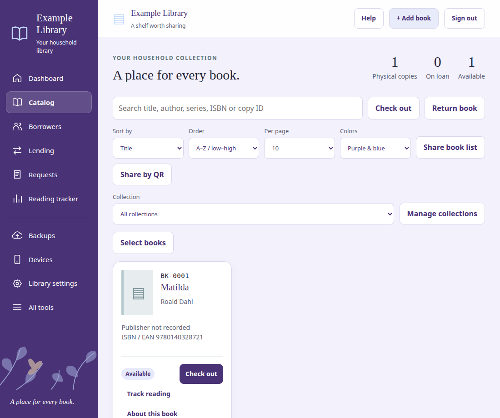
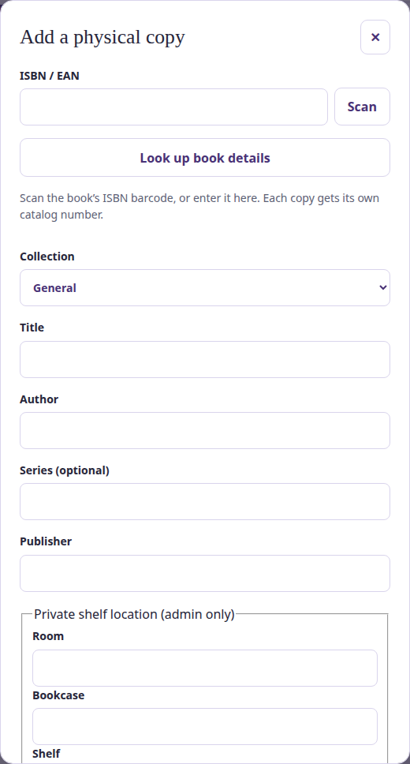
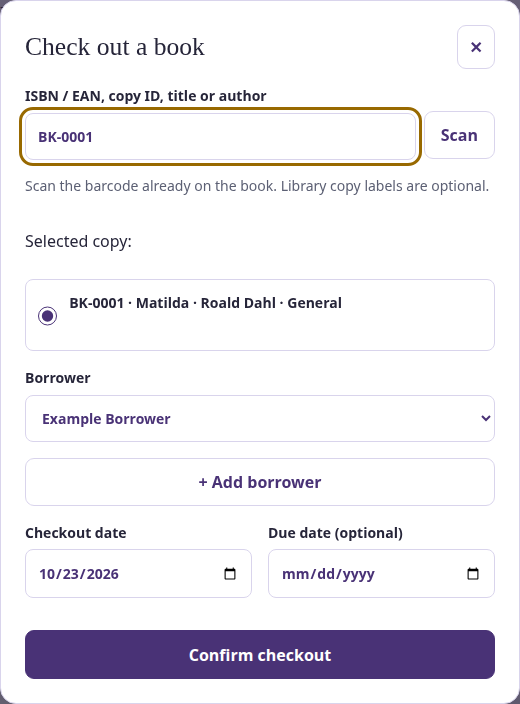

Your first book, loan and backup
Start here. You can use Carribrary without a phone companion, Google API key, public website or borrower accounts. The pictures use a fictional example library.
1. Install and open Carribrary
Windows: open the Carribrary installer and approve the Windows administrator prompt. Keep the normal installation folder, then finish setup. Open Carribrary from the desktop or Start menu. You do not need to install Node.js or .NET separately.
Linux desktop: open the Flatpak bundle in your software manager, install it, then launch Carribrary. Keep it running while phones use the library. Raspberry Pi: use the ARM64 DEB and the included Linux/Pi setup guide; its service runs in the background.
Local administrator setup: Carribrary asks for its own sign-in even when Windows is signed in. On first open, read the private local-admin-setup.txt file at the location shown on the page, paste its one-time code, and choose your administrator username/password. Save the recovery code privately before opening the library. Existing paired companions do not need another login. Keep codes private; see Local administrator sign-in and recovery in Help for recovery.
To add another librarian, open All tools → Dashboard accounts → Add administrator. Each person uses their own local username/password and recovery code. Borrower accounts and paired-device tokens are separate. To add your own optional sidebar decoration, open Library settings → Sidebar artwork; no default picture is embedded.
You are ready when you sign in and see your library’s Catalog page. If it does not open, see “Server troubleshooting checklist” in Help. Do not uninstall or delete data to repair an update.

2. Choose where you will use it
At home only: leave public sharing and remote access off. You can add books now. If you want the optional Android companion, follow the pairing steps below.
At home and away: on Windows open Start → Carribrary → Connection setup. Don’t have a hostname? Create a free hostname at DuckDNS.org, then return here to finish setup. Sign in to DuckDNS, choose an available subdomain, and copy your full hostname (for example, mybooks.duckdns.org) and token into Connection setup. Select Save remote connection to enable automatic address updates. Keep your token private. If you already have a hostname and an updater, use those instead. For public browser sharing, also select Set up public book-list sharing. Router port forwarding is a separate step; a successful DNS check alone does not prove remote access. Test your paired phone with Wi-Fi turned off.
For the iPhone admin PWA, configure public HTTPS and use iPhone companion to pair the browser. Borrowers use the public library link, not your private admin-phone pairing code.
The phone shows your library and can refresh it. “Offline” means it has not connected; check the saved address and pairing before changing the catalog.
2a. Pair the optional Android companion
The server works without a phone. The companion is for the librarian, not borrower sign-in.
- For this preview, download the Carribrary Android APK on the phone, open it in Files and tap Install. Public releases are planned to use Google Play once the listing is available. Only the APK goes on the phone; source archives and private signing folders stay off it. If Android asks, allow this installation from the app opening the APK. For updates, install over the existing app without uninstalling.
- Keep Carribrary running on the server computer. For the first local test, connect the phone to the same home Wi-Fi/network as that computer. Guest Wi-Fi may block devices from reaching each other.
- On the computer open Setup & updates and note a local phone address, such as https://192.168.1.50:7443. Use the actual address shown for your home network. For access away from home, finish the hostname/router setup first and use your configured HTTPS hostname and phone port instead.
- On the computer open Paired phones at the bottom of the admin catalog. Enter that address in Phone server address and select Create pairing QR. Do not use localhost on the phone; it means the phone itself.
- Open the Android companion, enter a Phone name, select Scan pairing QR, and allow camera access. Scan the PRIVATE QR displayed on the computer. It works once and expires after five minutes; create another if needed.
- If scanning fails, use Copy private pairing text on the computer, transfer it privately to your phone, paste the entire text into Pairing code (manual fallback), then select Pair phone. Never post this text or the QR publicly.
- Success: the phone says Connected to library server and shows the same catalog. If Offline appears, check the address, shared network, server power and firewall access to the phone port, then refresh. For remote access test again with Wi-Fi off. Keep the server running.
Keep admin pairing private. Share by QR is a different code for borrowers. Revoke a lost phone in Paired phones. Normal updates keep your pairing.
Using an iPhone instead?
Configure the public HTTPS address first. In Safari open your HTTPS library hostname followed by /companion/, then Share → Add to Home Screen. Open the new icon. On the computer choose iPhone companion → Create private iPhone pairing code. Paste that code into the installed companion, name the device, and select Pair this companion. The code works once for 10 minutes; browser admin access lasts 30 days. No Android APK is needed on iPhone.
3. Add your first physical book
- Select + Add book.
- Scan the book’s existing ISBN/EAN, or type it. Manual entry remains available.
- Look up details if wanted. Check the title and author; providers may be unavailable or have no cover.
- Save the book. Carribrary assigns its own Copy ID.

The new book appears in the Catalog with a BK number. Two physical copies of the same edition have different Copy IDs. Custom printed labels are optional.
Not purchased yet? Use Books to buy instead, then confirm acquisition after purchase.
4. Add a borrower, if you lend books
- Open Borrowers.
- Select Add borrower.
- Enter their name and optional contact information, then save.
Their name appears in Borrowers and in the checkout selector. They do not need a sign-in account just to borrow a book.
A borrower account is optional and lets an approved person make requests and use their own encrypted personal lists. Household reading profiles are managed separately in Reading tracker.
5. Check out a book
- Select Check out.
- Scan or enter the existing ISBN/EAN, an optional Copy ID label, or find the book manually.
- If several available copies match, choose the physical copy.
- Select the borrower and an optional due date. Confirm when the book is handed over.

The book appears under On loan. Requests and holds reserve a copy; they do not start a loan until handover.
6. Return the physical copy
- Select Return book.
- Scan or enter its ISBN/EAN or Copy ID.
- Choose the matching checked-out copy if necessary, then confirm return.
The copy leaves On loan. Finishing a reading-tracker entry does not return the physical book.
7. Create a complete backup
- Open Settings & Tools → Data & History → Backups on the server, or Android Settings & Tools → Data & History → Complete server data backup.
- Choose a backup password of 12–128 characters, confirm it, and select Create complete backup (Android: Choose where to save).
- Wait for the download to finish. Keep the .carribrary-backup file and its password safely, preferably on a separate drive.
No manual server shutdown or hidden-folder copying is needed. Carribrary briefly pauses changes, takes consistent database snapshots, then resumes automatically.
The archive includes current accounts, encrypted borrower vaults, pairing keys, keyring and saved server settings. Borrowers still need their own private-list passphrases. Windows-protected keys/settings require the same Windows computer. Current data is limited to 2 GB / 10,000 files; old backups, programs, external HTTPS/proxy certificates, system tasks and environment-only settings are separate.
Check your saved file: Settings & Tools → Data & History → Verify complete backup. Choose the downloaded archive, enter its password and verify. This uploads it to your own server, checks all file hashes, encryption and SQLite integrity, then removes temporary recovered files. Nothing is restored. Large files may need the offline --verify-complete-backup ARCHIVE tool; the password is prompted, never part of the command. Verification does not establish cross-machine portability or replace a full recovery rehearsal.
Library export (JSON) is the smaller books-and-lending export. It excludes accounts, pairing keys and private vaults; Restore library export accepts only that JSON file.
Complete recovery: open Complete Backup Recovery from the Windows Start menu or Linux/Pi application menu. Choose an archive, verify, test its separate recovered copy, then use the confirmed Restore library flow. Current data is retained. After restoration, sign into the local dashboard to review restored accounts/devices before remote access resumes. Complete archives are separate from JSON Restore. See Full Help for limits, interrupted-restore undo and headless Pi instructions.
Borrowers can separately export their encrypted personal backup. Neither a sign-in password reset nor the server-backup password unlocks a borrower private list.
8. Update and recover safely
During setup, create a portable complete backup and keep its password separately. Data & History → Portable replacement backup optionally creates one every seven days and keeps four. Download a copy off this server: a backup on its own drive does not protect against losing that drive. On a replacement computer install 2.0.47 or later, open Complete Backup Recovery, verify the portable archive, rehearse and confirm restore, then review access and configure networking. Older Windows backups remain tied to the original computer.
- Keep a private backup and install the new server package over the old installation.
- On Windows, setup verifies the new files and saves a complete pre-update recovery point.
- Update Android over the existing app, without uninstalling or clearing its data. The iPhone PWA updates with the server.
If a supported Windows update fails, setup attempts to restore the previous compatible application. If a problem appears later, open Update and recovery from the Start menu or tray, select the previous version, and choose Restore selected application.
The tool checks integrity, restarts Carribrary, and checks that the catalog opens. Current books, loans, accounts, deletions, private lists and connection settings are kept.
This release supports compatible 2.0.45–2.0.47 program recovery. Library format is now 5. Earlier programs cannot preserve per-theme sidebar artwork and are not offered for program-only recovery. A return to an earlier release needs a matching complete pre-update backup and supervised recovery. Versions 2.0.30 and earlier cannot open it; do not downgrade. If upgrading from a version without Complete backup, first use its Windows recovery point or stopped-server folder-backup instructions. It does not restore an older database or offer automatic recovery across incompatible data formats. The tool also works when the main library page cannot open; a damaged recovery tool or Windows installation may need support.
Linux/Pi retain their existing package-update workflow. Guided rollback for those platforms is still planned. Do not assume an older package can read a newer database.
Historical information: recovery points contain private historical data. To remove installation-managed Windows recovery points, use Update and recovery → Delete recovery points and type the required confirmation. This removes rollback ability. Ordinary backup cleanup does not remove these administrator-protected points or any external copies.
Need a specific answer? Search the full Help. Never send passwords, private pairing codes, recovery codes, API keys or private backup files in a support message.